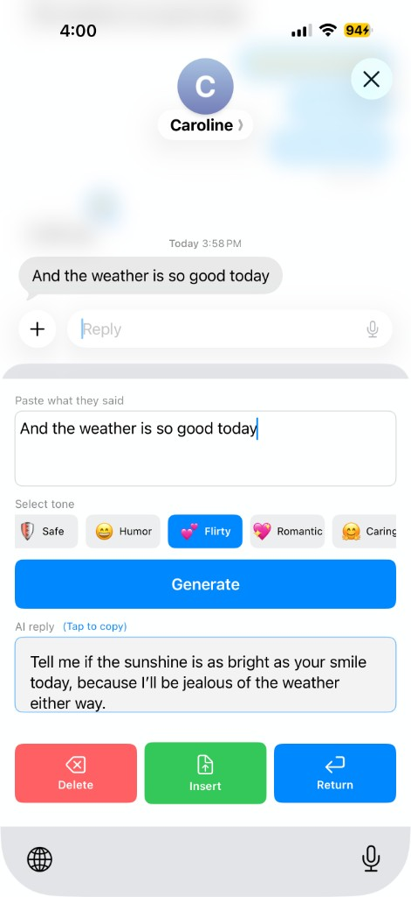

AI App · iOS
ReplAI is an AI-powered keyboard assistant designed to help users reply faster and more naturally in dating conversations. Instead of switching between apps or staring at a message for too long, users get context-aware suggestions directly in the keyboard, making it easier to keep conversations flowing.
The idea came from a personal pain point in dating. I found that even when I knew roughly what I wanted to say, I could still spend too much time thinking about the right phrasing, especially in conversations where tone and timing mattered. After talking to friends, I realized this was a common problem. A lot of people were not struggling because they had nothing to say, but because they were unsure how to say it in a way that felt natural, interesting, and confident. That shared frustration was what pushed me to build ReplAI.
While dating is the starting point, I think the underlying need is much broader. People face the same hesitation in many forms of communication, whether that is texting, social messaging, or email. In professional settings, for example, AI can help users respond with the right tone and sound more polished and thoughtful. Over time, I see ReplAI as a communication assistant that can support users across both personal and professional conversations.
ReplAI is still early, and I'm using this phase to refine the interaction design, improve the tone of the suggestions, and better understand what makes users want to keep using it over time.